This year while you daydream over those spring seed catalogs-give careful consideration to some of the incredible crossbreeds now on the market.
I know some lifetime gardeners who refuse to grow hybrids.
"Crossbreeds are pretty to look at," those folks will admit, "but they just don't have any taste at all!"
if you feel the same way, I'm here to tell you (after experimenting with these new strains for a number of years) that it simply ain't so.
Aside from the fact that hybrids offer greater uniformity, more vigor, and improved resistance to diseases, many of these modern vegetable varieties will flat astound you with their superior tastes!
Now, don't get me wrong! I don't have anything against longtime, open-pollinated stalwarts such as the Beefsteak tomato, Jersey Wakefield cabbage, or Golden Bantam sweet corn. The point that I do want to make, though, is that some of the new strains have simply zoomed right past the old standards of excellence we've set for our vegetables.
Sure, some hybrids aren't anything special, but the same thing can be said for a lot of old standbys. Late Flat Dutch cabbage, for example, has been around for ages, but I've yet to hear anyone praise its taste.
On the other hand, you can't find a more delicious cookin' variety than Gourmet cabbage. (just add a little butter, salt, and pepper ... steam it in a small amount of water . . . and let your taste buds judge its flavor!) And, not only does this hybrid produce as early as Jersey Wakefield ... it's also much more disease resistant.
If you want a larger cabbage that matures later, Roundup is about the best there is. It surpasses Late Flat Dutch in all respects ... especially in flavor. And it's also one of the better cabbages to use in sauerkraut.
Now, let's move on to that one vegetable loved by almost everyone: sweet corn. The top choice in this category for the last half-century has been Golden Bantam, with Stowell's Evergreen almost as popular among fanciers of white corn.
But, while both of these "old-timers" are still fine varieties, many people feel that the new Seneca Chief and Silver Queen are the finest tastin' sweet corns that ever came out of the ground. As delectable as they are, however, my own personal favorites are A&C No. 18 yellow sweet corn and Silver Sensation white sweet corn. Since it's sold by only one firm (Abbot and Cobb Seed Company), A&C No. 18 isn't very widely known. But this main-season, eight-inch, mostly two-eared variety is tremendously toothsome. As for Silver Sensation, it's best known for its unique nutty taste, and this corn is so vigorous that it'll I grow just about anywhere!
There are dozens of other fantastic sweet corn hybrids available as well. Among these, jubilee, Xtra-Sweet, Burpee's Honeycross, Gold Cup, Wonderful, NK 199, and White Delight are especially worthy of mention.
But the biggest news on the corn scene is the development of the new EH line. It's got all of the good qualities of the widely acclaimed Illini Xtra-Sweet species, plus a couple of big added attractions. You see, unlike the Illini Xtra-Sweet, EH doesn't have to be isolated from whatever other corn you may grow ... and its tender kernels remain edible and tasty for up to 14 days after pickin'. That means future supermarket shoppers may be able to buy fresh corn that's actually appetizin'.
Cantaloupes are another crop that's benefited from the development of new species. Old varieties like Hearts of Cold and
Pride of Wisconsin are always delicious, but they don't stand up to diseases like the equally savory Burpee Hybrid, Ambrosia, Supermarket, Harper Hybrid, Classic, Samson, and Gold Star.
To most people, however, the real Cadillac of cantaloupes is the very popular Saticoy Hybrid. Its adaptability and productiveness have to be seen to be believed, and-because Saticoy is very disease resistant-this strain will thrive in most any area that has a sufficiently long growing season.
If you live in a colder clime, though, try the hybrid called Alaska. This sought-after new release will mature two to three weeks earlier than Saticoy. It's shaped like a football, weighs three or four pounds, and has an exquisite taste. (it greatly resembles the old Mainerock hybrid, but its quality is far superior.)
While hybridization hasn't had much effect on the watermelon industry, there are many fine new breeds worth growin'. Some of the better ones are Top Yield, Family Fun, Fordhook Hybrid, Sweetmeat, and Yellow Baby ... and I'm particularly fond of Summer Festival and Yellow Doll.
Summer Festival looks like a short version of the old Charleston Gray, and usually weighs between 12 and 15 pounds. Besides being scrumptious, this melon is never stringy or hollow-hearted.
Yellow Doll-while not as productive as Summer Festival-is an eight-to-ten pound, golden-fleshed variety with a wonderful, unique flavor all its own. If you've never tasted yellow-fleshed watermelons, you're really missing a treat. There're a lot of good ones around, and Yellow Doll is the best of the bunch.
Most sweet peppers taste just about the same. (I can barely distinguish the difference in the 20 or so varieties I've grown.) But hybridization has improved both the growth habits and productivity of these plants.
Bell Boy is still the best of the many pepper hybrids developed in the last few years. This large, blocky, thick-walled beauty is so sturdy and prolific that I've seen as many as two dozen peppers on a single plant.
Golden Spike is a fine new hybrid hot pepper that soared to popularity in a very short time. It resembles Cubanelle or Hot Banana, and produces dozens of extremely hot peppers that turn red as they ripen. Other fine crossbreeds are Green Boy, Lady Bell, Pick-A-Peck, and Canape.
Eggplant is in the same boat as peppers. The flavor of the hybrids (while every bit as good as the old types) isn't really superior ... but the purple beauties sure have been improved in other ways: The new breeds produce more freely and are h3er in all respects.
Dusky-which you can harvest much earlier than any other eggplant- has become a big favorite with both commercial growers and home gardeners. Other leading hybrids are Mission Bell, Burpee Hybrid, Royal Knight, and Jersey King.
In many areas of the country, it's impossible to grow any cucumbers except the disease-resistant hybrids. I know. Every time I tried to raise such famous old varieties as Straight Eight, Long Green, Marketer, Longfellow, and National Pickle, diseases and insects wreaked havoc on my crop ... and I eventually had to turn to crossbreeds to get good results.
Surecrop was the first I tried, and its size and fruitfulness amazed me but the quality was only fair. So, I turned to Burpee Hybrid for several years. It was better than Surecrop, but not as good (I later discovered) as Meridian, Slicemaster, Saticoy, Shamrock, and Sprint. These hardy cucumbers not only taste great, but they'll also produce right up until the first frost.
A cucumber revolution, however, came with the introduction of the Burpless Hybrid. It's not all that pretty to look at, but its wonderful mild taste created an unbelievable demand all over the country. And before too long, that strain led to the creation of the finest tastin' cucumber ever developed: Sweet Slice.
These smooth, burpless, and delicious vegetables grow up to eight or nine inches long, and the skin is so thin and mildly flavored that you don't even have to peel 'em.
If you want a good picklin' cucumber, try Pioneer, which produces a remarkable number of fruits on each vine. The quality of this hybrid is equal to (or better than) the more well-known National Pickle. Other highly regarded hybrid picklers are Piccadilly and Spartan Dawn.
Probably the most publicized hybrid vegetable in the world is the tomato ... and the most famous in the line is Big Boy. But, the fact of the matter is that Big Boy was long ago surpassed by much tastier varieties and survives now mostly on past achievements. Just a few of the more toothsome hybrids are Better Boy, Supersonic, Super Red, Park's Whopper, Redheart, Terrific, Royal Flush, and Wonder Boy. All of these are disease-resistant plants with large, meaty fruits.
However, if you're lookin' for the ultimate in mouth-waterin' tomato goodness, Beef master is tops. This variety grows on a h3, rugged vine which produces one- to two-pound wonders ... and I just don't see how a tomato could taste any better than these monsters do!
For those of you who require an early maturer, Spring Giant, Springset, and Early Girl are hard to beat ... and they'll usually start producing about two weeks before Beefmaster or Better Boy, too.
But, as good as these varieties ate, the real star of early tomatoes has to be Ultra Girl ... a strain first sold only a couple of years ago by the Stokes Seed Company. It yields smooth and delicious fruits which hang in clusters all over the hardy vine and average seven to eight ounces each. And, on top of that, Ultra Girl resists all major tomato diseases!
Cauliflower, broccoli, and brussel sprouts-thanks to hybriclizationhave become much more widely grown and accepted by the public in the past few years. In fact, all the popular varieties of these vegetables are new crossbreeds.
Snow King and Snow Crown are truly outstanding cauliflowers, while Green Comet and Premium Crop are just two of a number of new broccoli releases. (Green Comet probably takes the lead in both taste and production.) Jade Cross is the best brussels sprout variety. It gives twice the yield of open-pollinated crops and the quality is really fine.
Even carrots have caught the attention of hybridizers in the past few years. Old established varieties such as Nantes, Chantenay, Danvers, and Imperator are now challenged by new hybrids like Carrousel, Touche, and Spartan Bonus. The main advantages of these "newcomers" are uniformity and higher yield.
Onions (Aristocrat, Fiesta, Empire, and Spartan Era) have also benefited from the hybridizer's touch, as have pumpkins, zucchini, and spinach.
No one says, of course, that you should abandon your favorite old vegetable standbys, but why not make room in your garden for a few of the delicious and prodigious newer strains?
Then, when somebody tells you that hybrids are nothing more than flavorless giants, you can sit that person right down and give him or her a taste of what these recent crossbreeds are really all about!
|
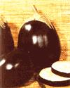 Hybrid eggplant ... the species produce freely and are strong in all respects |
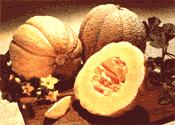 Hybrid cantaloupe |
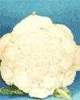 Snow King cauliflower |
|
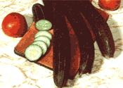 Burpless cucumber ... not at all pretty, but wonderfully mild in taste |
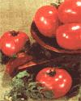 Wonder Boy VFN tomato |
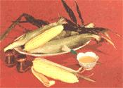 Honeycross . . . a sweet corn hybrid worthy of mention |
|
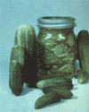 Spartan Dawn cucumber ... a highly regarded hybrid pickler |
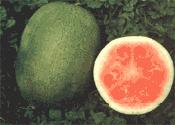 Top Yield watermelon ... a breed worth growing |
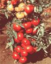 Better Boy tomato ... one of many toothsome hybrids |
|
Carrousel carrots |
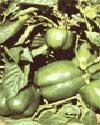 Hi-Pep Bell Boy ... the best of many pepper hybrids recently developed |
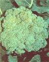 Premium Crop broccoli |